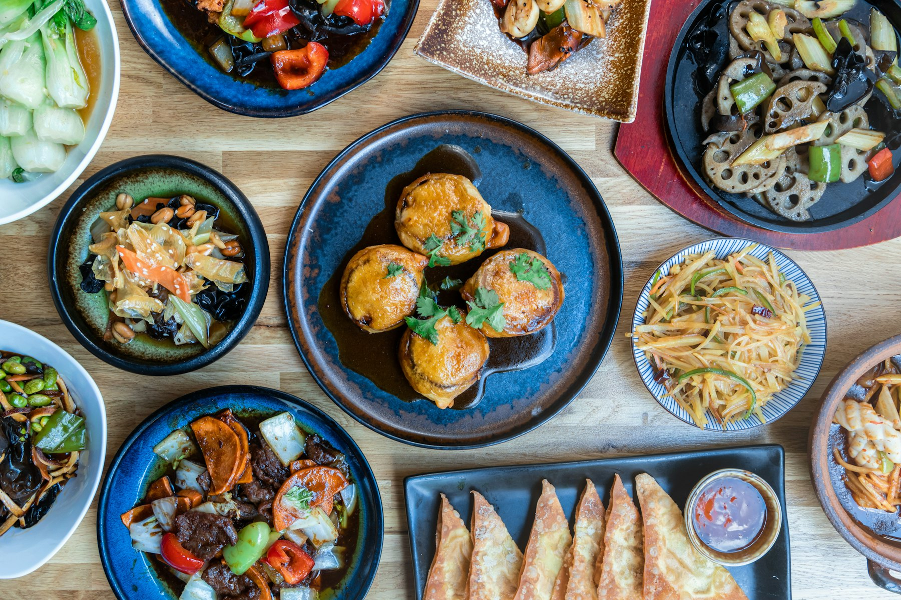
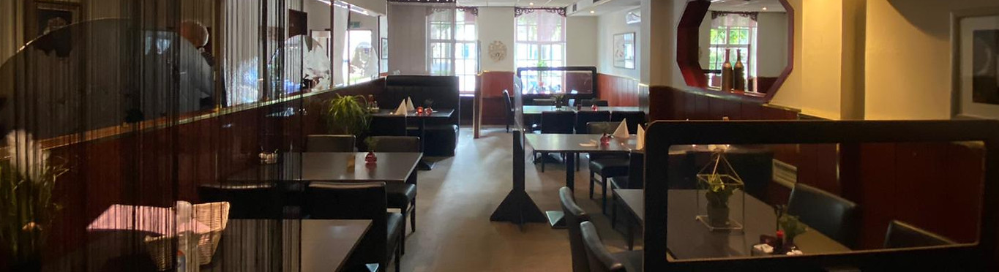

2-gangen keuzemenu
27,00Maak een keuze uit een voorgerecht of soep, plus een hoofdgerecht.
Chinees restaurant en afhaal aan de Markt in Etten-Leur. Vertrouwde, traditionele Chinese en Indische gerechten, sinds 1995.
Bestellen en reserveren gaat telefonisch.

Vriendelijk verzoek om vooraf telefonisch te bestellen, zodat uw maaltijd op het afgesproken tijdstip klaarstaat om opgehaald te worden. Noem gerust het nummer uit de afhaallijst.
Ons restaurant is gevestigd sinds 1995 in het centrum van Etten-Leur. Bij ons kunt u terecht voor al uw vertrouwde en traditionele Chinese gerechten.
Wij verwennen onze gasten met een klassieke Chinese en Indische keuken. Kom gezellig een hapje eten in ons sfeervol ingerichte restaurant: u bent van harte welkom voor een diner. Ons restaurant is weer open.
We hopen u snel als gast te kunnen verwelkomen!

Reserveer telefonisch een tafel en schuif aan in ons restaurant.
Tafel reserverenGeen zin om uit eten te gaan? Haal diverse gerechten en menu’s bij ons af.
Bekijk de afhaallijstBij feestjes of speciale gelegenheden bij u thuis verzorgen wij graag de catering, zodat u zorgeloos kunt genieten van uw eigen feest.
Bel voor de mogelijkheden4,5 van 5 in Google-reviews
Gezellige zaak, je wordt gastvrij ontvangen. Eten was heel erg lekker en niet duur. Hier gaan we zeker vaker komen. Complimenten aan de kok!
Voor het eerst sinds lange tijd weer eten besteld: afhaalmenu A. Wat een genot. Waanzinnig lekker! Prijs/kwaliteit is dik in orde. (…) Kerrie om je vingers aan af te likken. Saté: man man man, heerlijk. (…)
Het eten was hartstikke lekker en het personeel was erg netjes. Ik heb een nieuwe Chinees gevonden waar ik voortaan het Chinees eten ga halen.
Markt 36
4875 CE Etten-Leur
Bestellen en reserveren graag telefonisch. Vragen? Neem gerust contact op.
| Maandag | 16:00 – 21:00 |
|---|---|
| Dinsdag | gesloten |
| Woensdag | gesloten |
| Donderdag | 16:00 – 21:00 |
| Vrijdag | 16:00 – 21:00 |
| Zaterdag | 15:00 – 21:00 |
| Zondag | 15:00 – 21:00 |